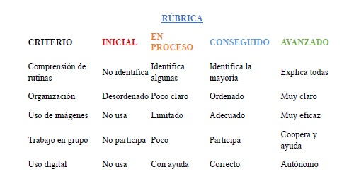
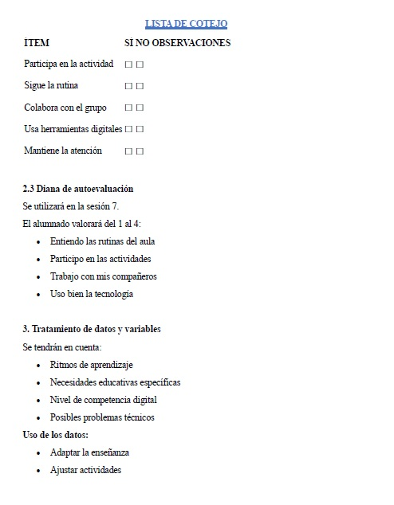

Actividad 8.1.
1. Enfoque de evaluación
La evaluación será continua, formativa e inclusiva, combinando la observación directa, el análisis del producto final y la autoevaluación del alumnado.
Se pretende recoger información desde diferentes perspectivas para mejorar el proceso de enseñanza-aprendizaje y adaptarlo a las necesidades del alumnado.
2. Instrumentos de evaluación
2.1 Rúbrica del póster final
Se utilizará en las sesiones 6 y 7 para evaluar el producto final.
¿Qué evalúa?
Comprensión de las rutinas
Organización de la información
Uso de pictogramas
Trabajo en grupo
Uso de herramientas digitales
2.2 Lista de cotejo
Se utilizará durante las sesiones 1 a 5 para evaluar el proceso.
3. Tratamiento de datos y variables
Se tendrán en cuenta:
Ritmos de aprendizaje
Necesidades educativas específicas
Nivel de competencia digital
Posibles problemas técnicos
Uso de los datos:
Adaptar la enseñanza
Ajustar actividades
Personalizar el aprendizaje
Mejorar la práctica docente
4. Conclusión
La combinación de estos instrumentos permite una evaluación:
Continua
Inclusiva
Adaptada al aula específica
Centrada en el proceso de aprendizaje
“La triangulación de instrumentos permite contrastar la información obtenida mediante la observación docente, el análisis del producto final y la autoevaluación del alumnado, favoreciendo una evaluación más completa, objetiva e inclusiva.”

Imagen de elaboración propia. Almudena Vargas Cano

Imagen de elaboración propia. Almudena Vargas Cano